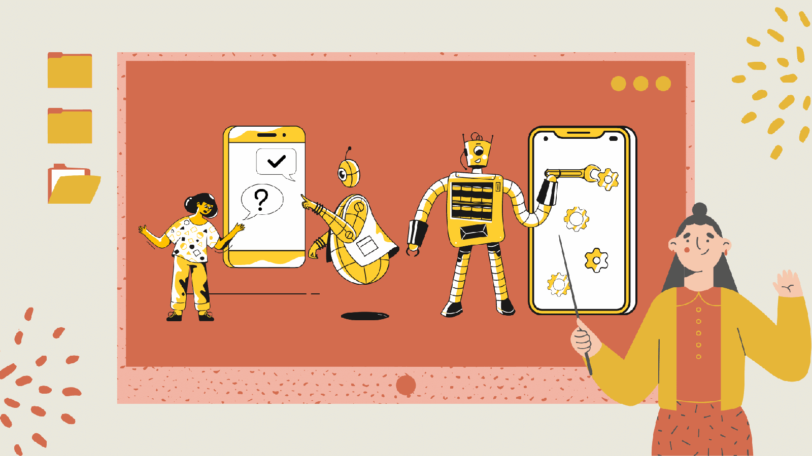

聊天機器人真的這麼「智能」嗎？
給他幾個例子，他就可以像人一樣自主學習嗎？答案是可以的，但是！為什麼近期會這麼興起一個職務叫語意分析師或建構師呢？
聊天機器人的自主學習只要是應用多組深度學習模型去模擬人的口氣、對於語言解釋的判斷及適當的問題回覆適當的答案，那要怎麼學習？誰讓聊天機器人學習？就是語意分析師或建構師。
可以想像一下，「人」的成長需要有大量的學習知識，其實智能機器人也會需要的，只是「人」的認知和「機器人」還是有區別的，人可以懂文字、文化、情感、人際關係、倫理道德、法規等複雜的理解能力，但機器人只看得懂0和1，要怎麼教他們懂文字及複雜的理解能力？這時候就需要請到語意分析師及建構師出馬了，因為他們懂怎麼在人與機器人間做溝通的橋樑。
聊天機器人跟學習有什麼關係？
説到這一定又有人會問，那智能機器人就不能餵養一次相關知識理解範圍後，就讓他們自主學習嗎？
這個問題沒有對錯，短期內確實可以讓他們自主學習一段時間，但就長期經營來說，還是需要有「導師」這樣的角色去替智能機器人解惑和導正。好比說「人」可不可以自主學習？可以，但是「人」在學習的過程中，一定會有疑問和學習分歧點，這時候能做的除了上網查資料之外，最好是還有一位「導師」協助做判斷和教學，人需要一位人生導師，所以機器人也是需要的。
智能機器人怎麼做學習？擔任語意分析師或建議師需要做什麼事情？
語意建構師擔任聊天機器人與人之間的溝通橋樑，最一開始我們會先做需求訪談確認之後，再進行聊天機器人塑造的動作，這隻聊天機器人會有以下幾個面向需確認：
- 被需求的功能有哪些？問答回覆、生活對話、互動人設、品牌塑造等
- 呈現在哪裡？Line@官方帳號、FaceBook粉絲團、官方帳號、IG等
- 如何呈現？人物設計、品牌形象等
- 被需求的知識範圍在哪？各行各業的FAQ、產品介紹、場地說明、疑難雜症等
- 被需求即時更新的資料是什麼？如火車/高鐵時刻表、天氣、匯率等可即時更新的知識
- 系統建置方式？雲端租賃、落地建置、租轉售等
在第一次塑造完一隻聊天機器人成功上線後，因為受眾詢問方式的不同和網路用語更新太快，建議大概２年內需要每月或每週做一次知識範圍和理解能力的調整，２年後受眾的詢問方式大概固定及與這隻聊天機器人磨合期過後，可改為每季或每半年做一次知識範圍和理解能力的調整。